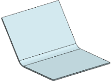
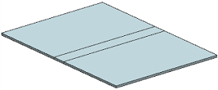
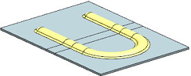
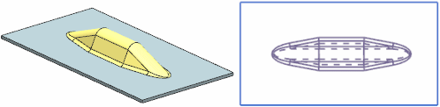

Bead enhancements
What is it?
Bead feature across bend regions
You can now create a Bead feature across bends in the flattened state.
|
 |
Original part |
|
|
 |
Part in unbent state |
|
|
 |
Open section type of Bead feature across bend region |
|
|
|
Original part rebent |
|

|
Note |
To create Bead features across bends, the Unbend, Bead, and Rebend features have to be created in NX 8.5 or later. Features such as Unbend, Rebend, Flat Solid, Resize Bend Angle, Flat Pattern and so on will work with such Bead features only if they are created in NX 8.5 or later. |
Bead feature with a V-shaped cross section
You can now create a Bead feature with a V-shaped cross section and tapered end condition.

The new customer default Taper Distance, lets you specify the value for the default taper distance for the Bead feature.
Where do I find it?
Bead dialog box
|
Application |
NX Sheet Metal |
|
Toolbar |
NX Sheet Metal→Punch Drop–down list→Bead |
|
Menu |
Insert→Punch→Bead |
|
Location in dialog box |
Bead Properties group→Cross Section list→V-Shaped Bead Properties group→End Condition list→Tapered |
Customer Defaults dialog box
|
Menu |
File→Utilities→Customer Defaults |
|
Location in dialog box |
Sheet Metal→Bead→General tab→Taper Distance |